Portafolio
Proyectos y paneles que construyo y mantengo en casa.
-
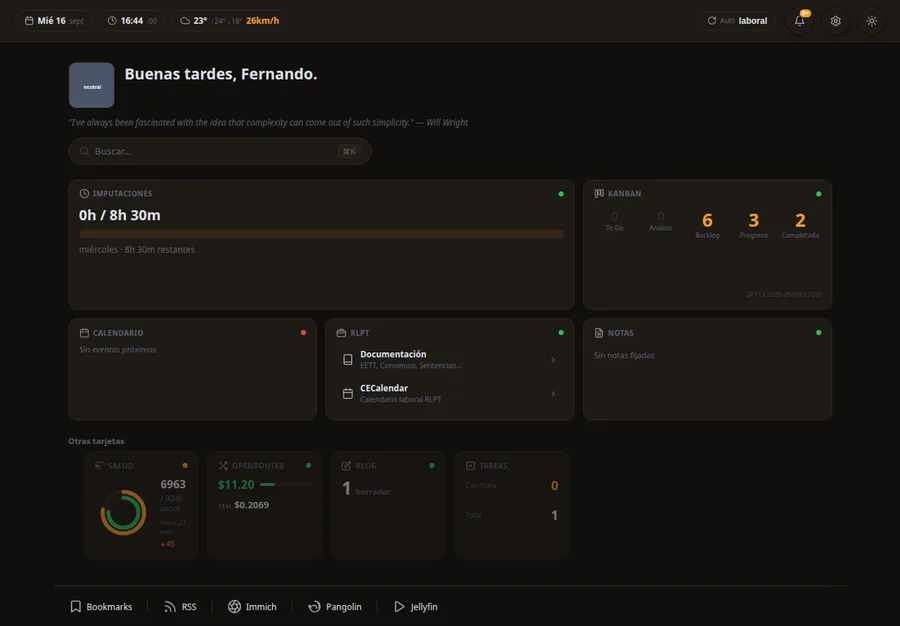
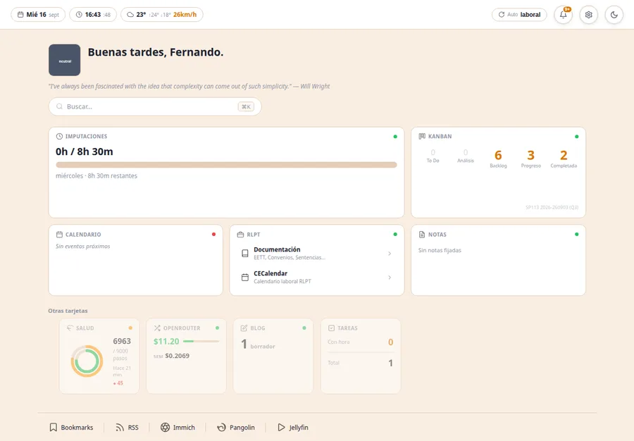
Dashboard
2026Centro de control con datos en vivo de mis proyectos y herramientas, adaptándose a la hora y al usuario.
-
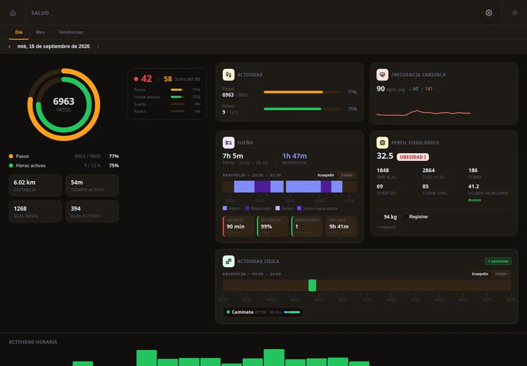
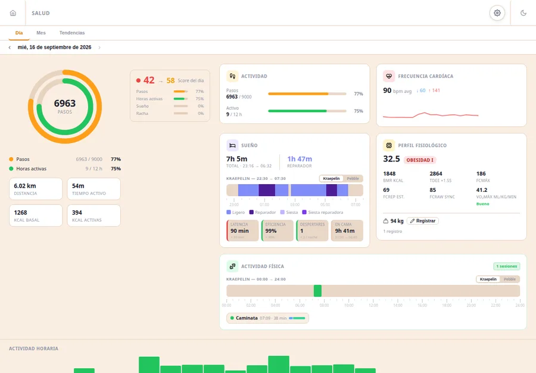
Pebble Health System PHS
2026Dos aplicaciones —para Pebble, Android y Web— que recogen la actividad de salud del reloj y la transforman en un panel claro y agradable de consultar.
-
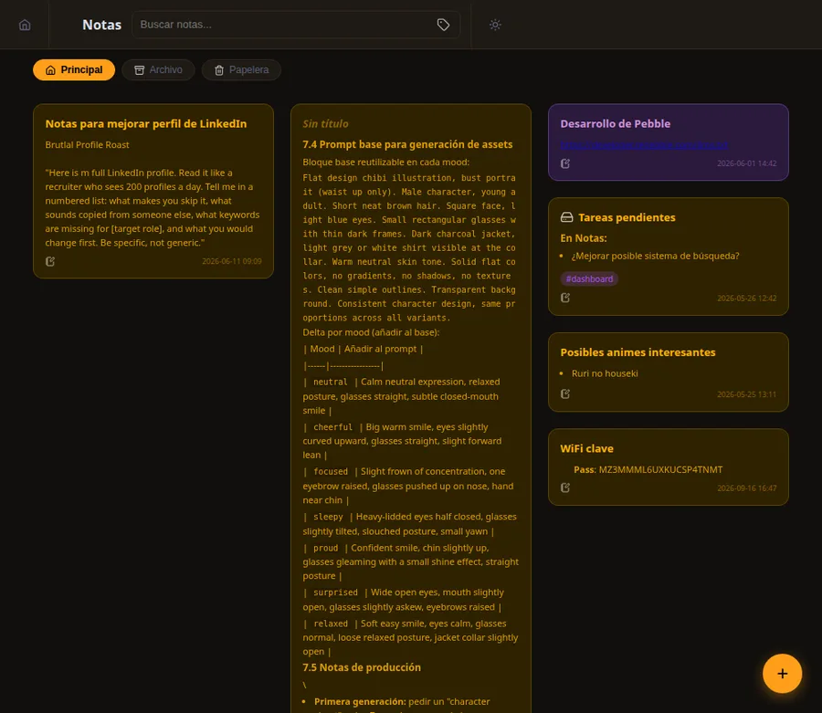
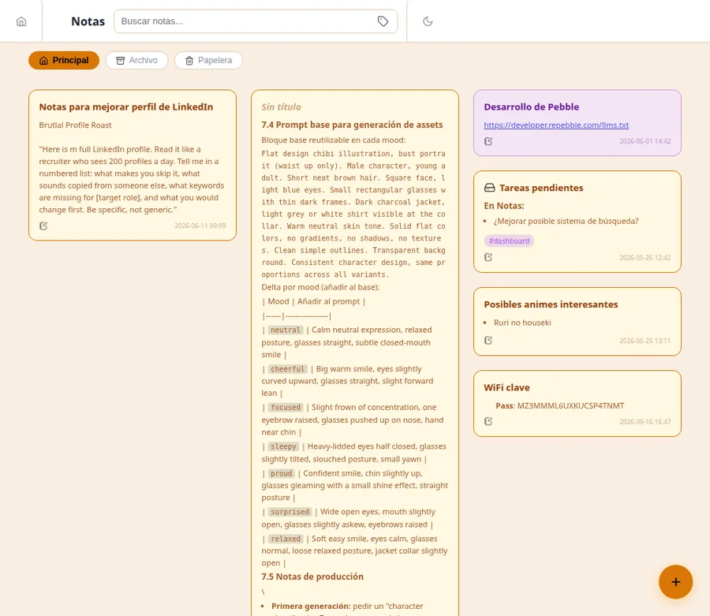
Notas
2026Aplicación web de gestión de notas rápidas en ficheros markdown locales, con edición completa WYSIWYG.
-
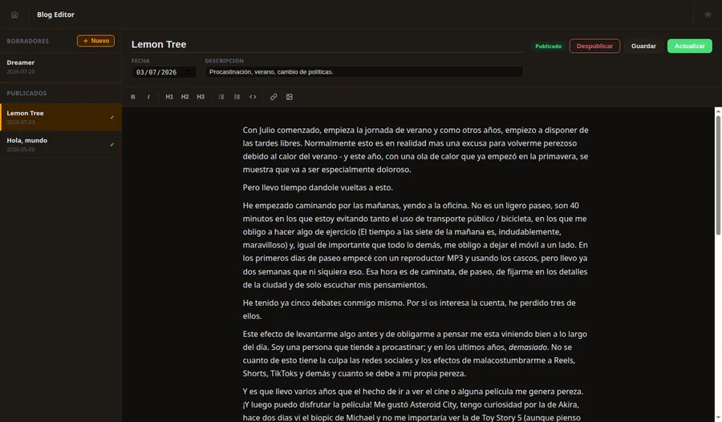
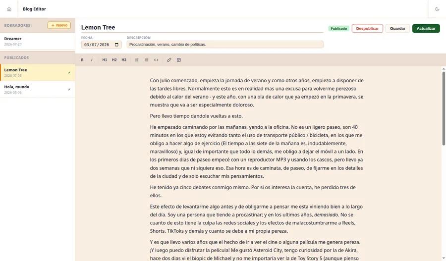
BlogEditor
2025Herramienta de edición, revisión y publicación de entradas en un blog básico. Editor completo markdown, gestión de borradores.
-
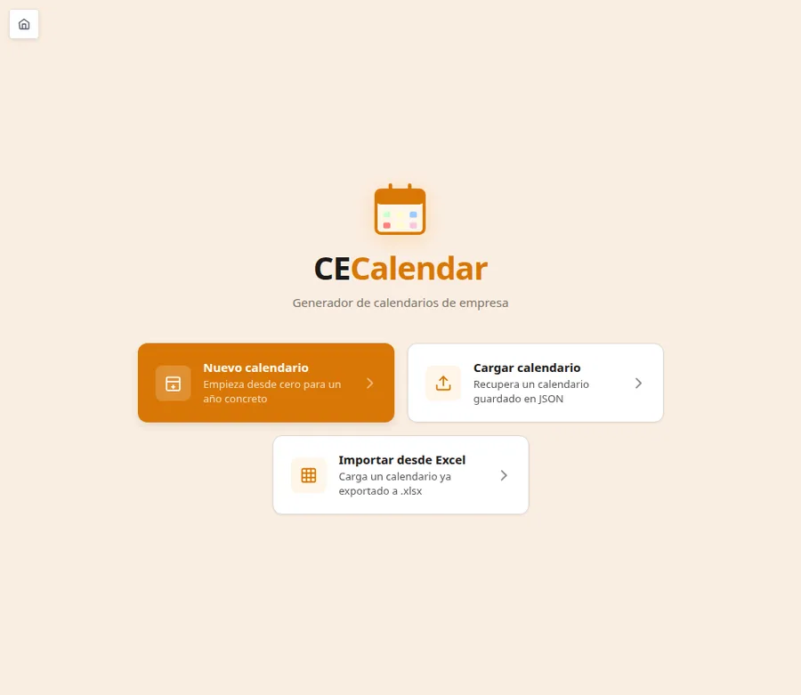
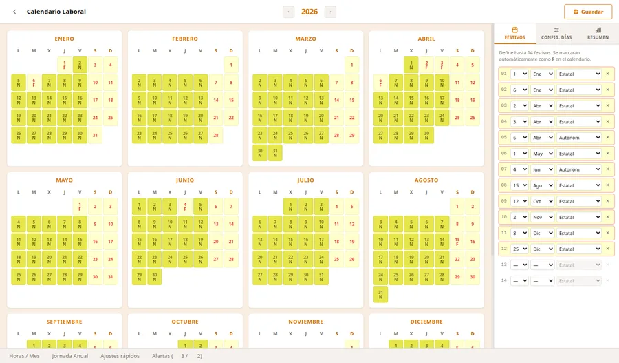
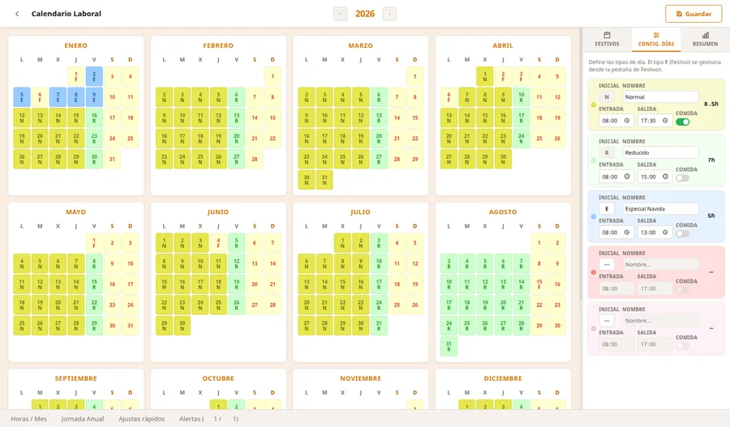
CECalendar
2025Gestión de calendarios de empresa; con control de festivos, días de jornadas especiales, vacaciones y revisión de legislación.
-
Más casos en camino.